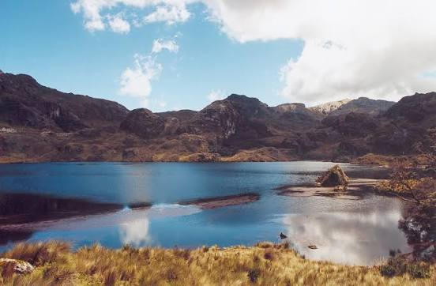

Está a unos 30 kilómetros de la ciudad y tiene cientos de lagunas, páramos y senderos. Es ideal para caminar, pescar y fotografiar el paisaje andino. Conviene llevar abrigo, porque el clima cambia rápido.
Patrimonio Cultural de la Humanidad
Cuenca tiene muchos sitios para recorrer a pie o en un par de horas de viaje. Estos son cinco lugares que no te puedes perder:
Los cuatro primeros están en el centro histórico, a pocas cuadras unos de otros, por lo que se pueden visitar en un solo día caminando.

Está a unos 30 kilómetros de la ciudad y tiene cientos de lagunas, páramos y senderos. Es ideal para caminar, pescar y fotografiar el paisaje andino. Conviene llevar abrigo, porque el clima cambia rápido.

Ideal para caminar por sus orillas y conocer el centro histórico. En sus márgenes hay museos, cafés y puentes peatonales que permiten ver la ciudad desde distintos puntos.
El mejor momento para recorrer el centro es en la mañana, cuando hay menos gente. Usa zapatos cómodos por las calles empedradas y lleva una chaqueta ligera, ya que el clima de montaña puede ser fresco incluso en días soleados.